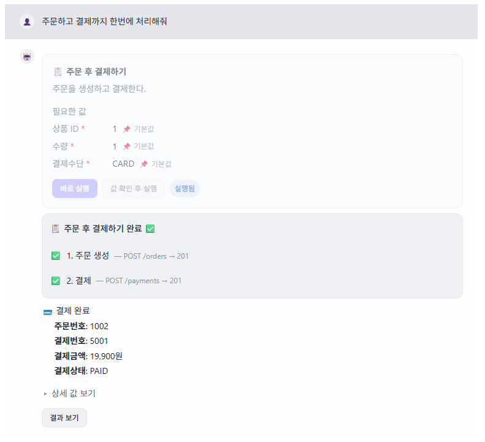

채팅으로 원하는 상황을 말하면, AI가 필요한 API를 골라 실제로 실행해 테스트 데이터를 만들어 줍니다.
서류합격 지원자, 결제를 마친 회원… 상황마다 다른 데이터가 필요합니다. 어떤 기능을 어떤 순서로 거쳐야 하는지 알아야 하고, 경우의 수가 많아 미리 만들 수도 없습니다.

결제·차감 같은 실제 로직을 건너뜀 → 현실에 없는 데이터, 위험
실제 사용자와 똑같은 절차(검증·부수효과·정합성)를 거침 → 현실과 똑같은 데이터가 안전하게
하나의 서버로 끝나지 않습니다. 구직자 서버와 기업 서버를 넘나들며 순서대로 실행합니다.
메일 인증번호 읽기처럼 API만으로 막히는 중간 단계도 처리해 흐름이 끊기지 않습니다.
| 기존 방식 | 한계 | 테스트메이트 |
|---|---|---|
| DB 직접 INSERT | 비현실·깨진 데이터, 위험 | 실제 API로만 → 현실과 동일 |
| Postman 수동 호출 | 순서·값을 사람이, API를 알아야 | 말 한마디로 AI가 조합 |
| 자동화 스크립트 | 정해진 경우만, 바뀌면 재코딩 | 처음 보는 요청도 즉석 조합 |
| 범용 AI 코딩 도구 | 코드만 줄 뿐, 연결·실행은 각자 | 사내 API 연결 + 실행 + 자산화 |
→ 1인이 기획·백엔드·프론트·문서를 진행해 동작하는 프로토타입 완성
의도 분석 + 작업 선택을 한 번에 (2단계 → 1회) → 호출 수 절반
필요한 서비스의 레시피만 전달 → 입력 토큰 최대 2배 차이
무거운 판단은 고성능, 가벼운 처리는 저가 모델로 분리
자주 쓰는 작업은 버튼으로 바로 → AI 호출 0회
“○○기업 결제 내역이랑 올라간 공고 보여줘” → 조회 API들을 골라 실행·정리
“내가 지원한 공고 중 서류합격만 알려줘” → 지원현황 조회 API 실행·정리
등록된 API·문서를 근거로만. 근거 없으면 되묻거나 “없다”
결제 등 되돌릴 수 없는 API는 실행 전 확인(@TestForgeConfirm)
관리·내부용 API는 노출 안 함(@TestForgeExclude)
개발·스테이징에서만 동작, 라이브러리를 켜야만 작동
| 영역 | 구성 |
|---|---|
| 프론트엔드 | React 19 · Vite · TypeScript · TailwindCSS |
| 백엔드 | Java 25 · Spring Boot 4 · MySQL · SSE(실시간) |
| AI | OpenAI 호환 API 직접 호출(RestClient) + tool_calls · reasoning/fast 모델 이원화 |
| 라이브러리 | Java 21 · OpenAPI 자동 수집 · CORS 자동 설정 · 어노테이션 |
| 검증 | 서로 다른 도메인의 데모 서버 6종으로 실제 실행 검증 |